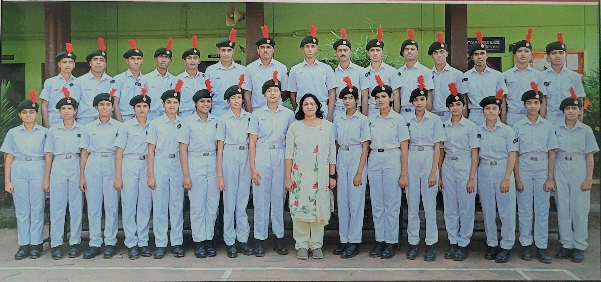

Batch 2024 – 2025
⚓ The Founding Batch ⚓
The first batch of the 9(K) Naval Unit NCC, St. Catherine's HSS Payyampally, laying the foundation of discipline, leadership and service.
← Back to HomeThe first batch of the 9(K) Naval Unit NCC, St. Catherine's HSS Payyampally, laying the foundation of discipline, leadership and service.
← Back to HomeEstablished
Cadets
Founding Batch
